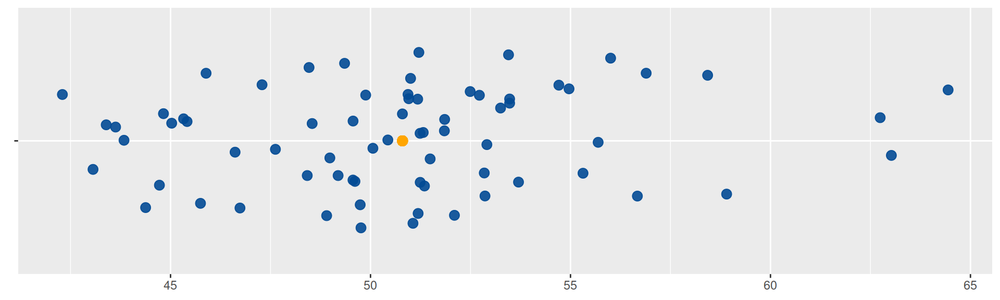
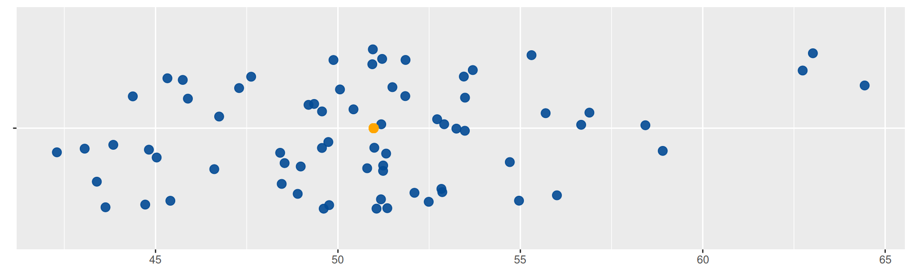

library(ggplot2)
x=c(51.35, 49.88, 49.35, 51.21, 51.24, 45.75, 48.42, 47.29, 48.98, 50.06, 50.94, 45.41, 55.69, 48.90, 56.00, 44.72, 56.89, 46.61, 53.25, 48.46, 49.74, 45.03, 63.02, 50.96, 50.43, 51.19, 53.45, 52.10, 49.61, 45.89, 49.76, 42.30, 53.48, 54.71, 53.48, 56.67, 44.38, 51.18, 51.06, 54.96, 64.44, 51.85, 45.33, 62.74, 43.84, 51.32, 53.70, 51.00, 52.86, 43.06, 43.63, 51.24, 52.84, 49.19, 49.56, 49.56, 51.49, 55.31, 46.74, 47.62, 51.85, 58.90, 50.80, 43.39, 48.54, 52.72, 44.82, 52.49, 58.43, 52.91)
data1 <- data.frame(
name1=rep("A",70),
value1=x
)
# Supongamos que data1 es tu conjunto de datos
# Crear un gráfico base
p2 <- ggplot(data1, aes(x = value1, y = " ")) +
geom_jitter(color = "#034A94", size = 3, alpha = 0.9) +
geom_text(data = data1, x = 50.5, y = 0, label = "x", col = "#034A94") +
# Eliminar el eje y y el nombre de la variable en la leyenda
theme(axis.title.y = element_blank(),
axis.title.x = element_blank(),
legend.title = element_blank())
# Mostrar el gráfico
print(p2)
Una de las características principales están constituido por los indicadores de centro, dentro de ellos se destacan :
Es el indicador de tendencia central más conocido y utilizado por su fácil interpretación y calculo. Consiste en sumar todos los valores de un conjunto de datos y dividirlos por el número de datos
library(ggplot2)
x=c(51.35, 49.88, 49.35, 51.21, 51.24, 45.75, 48.42, 47.29, 48.98, 50.06, 50.94, 45.41, 55.69, 48.90, 56.00, 44.72, 56.89, 46.61, 53.25, 48.46, 49.74, 45.03, 63.02, 50.96, 50.43, 51.19, 53.45, 52.10, 49.61, 45.89, 49.76, 42.30, 53.48, 54.71, 53.48, 56.67, 44.38, 51.18, 51.06, 54.96, 64.44, 51.85, 45.33, 62.74, 43.84, 51.32, 53.70, 51.00, 52.86, 43.06, 43.63, 51.24, 52.84, 49.19, 49.56, 49.56, 51.49, 55.31, 46.74, 47.62, 51.85, 58.90, 50.80, 43.39, 48.54, 52.72, 44.82, 52.49, 58.43, 52.91)
data1 <- data.frame(
name1=rep("A",70),
value1=x
)
# Supongamos que data1 es tu conjunto de datos
# Calcula la media de los datos
media <- mean(data1$value1)
# Crea un gráfico base
p2 <- ggplot(data1, aes(x = value1, y = " ")) +
geom_jitter(color = "#034A94", size = 3, alpha = 0.9) +
geom_text(data = data1, x = 50.5, y = 0, label = "x", col = "#034A94") +
# Añade un punto de la media en color naranja
geom_point(x = media, color = "orange", size = 3) +
# Elimina el eje y y el nombre de la variable en la leyenda
theme(axis.title.y = element_blank(),
axis.title.x = element_blank(),
legend.title = element_blank())
# Mostrar el gráfico
p2
\[\bar{x}= \frac{1}{n} \sum_{i=1}^{n} x_{i}\]
x=c(51.35, 49.88, 49.35, 51.21, 51.24, 45.75, 48.42, 47.29, 48.98, 50.06, 50.94, 45.41, 55.69, 48.90, 56.00, 44.72, 56.89, 46.61, 53.25, 48.46, 49.74, 45.03, 63.02, 50.96, 50.43, 51.19, 53.45, 52.10, 49.61, 45.89, 49.76, 42.30, 53.48, 54.71, 53.48, 56.67, 44.38, 51.18, 51.06, 54.96, 64.44, 51.85, 45.33, 62.74, 43.84, 51.32, 53.70, 51.00, 52.86, 43.06, 43.63, 51.24, 52.84, 49.19, 49.56, 49.56, 51.49, 55.31, 46.74, 47.62, 51.85, 58.90, 50.80, 43.39, 48.54, 52.72, 44.82, 52.49, 58.43, 52.91)
data1 <- data.frame(name1=rep("A",70),value1=x ) # vector de números
mean(data1$value1) # media [1] 50.79957sum(data1$value1)/length(data1$value1) # calculo de la media[1] 50.79957Sus principales propiedades son:
La suma de las desviaciones de los datos con respecto a la media es cero. \(\sum (x_{i}-\bar{x})=0\).
La suma de los cuadrados de las desviaciones de los datos con respecto a un valor \(a\) es mínimo cuando \(a=\bar{x}\).
Si \(x_{i}=k\) para todo \(i\), entonces, \(\bar{x}=k\).
Si todos los datos de una variable se multiplican por una constante \(k\), es decir \(y_{i}=kx_{i}\), entonces \(\bar{y}=k\bar{x}\)
Si \(z_{i}=a x_{i}+b y_{i}\), donde: a, b constantes y \(x_{i}\), \(y_{i}\) variables, entonces: \(\bar{z}=a\bar{x}+b\bar{y}\).
El promedio del rendimiento de millas por galón de combustible de un
grupo de 32 autos observados en el dataset mtcars es de
\(20.09\) mpg
mean(mtcars$mpg, # variable mpg de la data mtcars
na.rm = TRUE) # parametro util cuando se tiene datos faltantes [1] 20.09062
La mediana es el número que divide la muestra en dos partes de igual proporción (50% : 50%). Es decir que corresponde al percentil 50 + \(D_{5}\) : decil 5 + \(Q_{2}\) : segundo cuartil
library(ggplot2)
x=c(51.35, 49.88, 49.35, 51.21, 51.24, 45.75, 48.42, 47.29, 48.98, 50.06, 50.94, 45.41, 55.69, 48.90, 56.00, 44.72, 56.89, 46.61, 53.25, 48.46, 49.74, 45.03, 63.02, 50.96, 50.43, 51.19, 53.45, 52.10, 49.61, 45.89, 49.76, 42.30, 53.48, 54.71, 53.48, 56.67, 44.38, 51.18, 51.06, 54.96, 64.44, 51.85, 45.33, 62.74, 43.84, 51.32, 53.70, 51.00, 52.86, 43.06, 43.63, 51.24, 52.84, 49.19, 49.56, 49.56, 51.49, 55.31, 46.74, 47.62, 51.85, 58.90, 50.80, 43.39, 48.54, 52.72, 44.82, 52.49, 58.43, 52.91)
data1 <- data.frame(
name1=rep("A",70),
value1=x
)
# Calcula la medina de los datos
mediana <- median(data1$value1)
# Crea un gráfico base
p3 <- ggplot(data1, aes(x = value1, y = " ")) +
geom_jitter(color = "#034A94", size = 3, alpha = 0.9) +
geom_text(data = data1, x = mediana, y = 0, label = "x", col = "#034A94") +
# Añade un punto de la media en color naranja
geom_point(x = mediana, color = "orange", size = 3) +
# Elimina el eje y y el nombre de la variable en la leyenda
theme(axis.title.y = element_blank(),
axis.title.x = element_blank(),
legend.title = element_blank())
# Mostrar el gráfico
p3
x=c(51.35, 49.88, 49.35, 51.21, 51.24, 45.75, 48.42, 47.29, 48.98, 50.06, 50.94, 45.41, 55.69, 48.90, 56.00, 44.72, 56.89, 46.61, 53.25, 48.46, 49.74, 45.03, 63.02, 50.96, 50.43, 51.19, 53.45, 52.10, 49.61, 45.89, 49.76, 42.30, 53.48, 54.71, 53.48, 56.67, 44.38, 51.18, 51.06, 54.96, 64.44, 51.85, 45.33, 62.74, 43.84, 51.32, 53.70, 51.00, 52.86, 43.06, 43.63, 51.24, 52.84, 49.19, 49.56, 49.56, 51.49, 55.31, 46.74, 47.62, 51.85, 58.90, 50.80, 43.39, 48.54, 52.72, 44.82, 52.49, 58.43, 52.91)
data1 <- data.frame(
name1=rep("A",70),
value1=x
) # vector de números
median(data1$value1) # mediana [1] 50.98
La moda corresponde al dato o valor que más se
repite. Es utilizada como medida de tendencia central en variables
cualitativas o en cuantitativas discretas con pocos valores.
Moda : UEFA .
Con el fin de evitar que los datos atípicos generen sesgos en el indicador de la media, es posible separar el 90% de los datos, quitando un 5% de los datos más pequeños y un 5% de los datos mayores. A este indicador se le llama media truncada al 10% (\(\bar{x}_{_{0.10}}\))
El valor para la media truncada al 10% para el caso de los datos de
rendimiento de millas por galón de combustible de un grupo de 32 autos
observados en el dataset mtcars es de 19.69615
mean(mtcars$mpg, na.rm = TRUE, trim = 0.10)[1] 19.69615
El rango medio se obtiene al sumar los valores extremos ( mínimo y máximo) y dividir el resultado por dos. Este indicador es de fácil cálculo y útil cuando se desea una estimación empírica y alta precisión en datos simétricos.
\[\frac{1}{2}\big(max(x)+min(x)\big)\]
Para el caso de los datos de rendimiento de combustible arroja un valor de 22.15 millas por galón.
x=c(51.35, 49.88, 49.35, 51.21, 51.24, 45.75, 48.42, 47.29, 48.98, 50.06, 50.94, 45.41, 55.69, 48.90, 56.00, 44.72, 56.89, 46.61, 53.25, 48.46, 49.74, 45.03, 63.02, 50.96, 50.43, 51.19, 53.45, 52.10, 49.61, 45.89, 49.76, 42.30, 53.48, 54.71, 53.48, 56.67, 44.38, 51.18, 51.06, 54.96, 64.44, 51.85, 45.33, 62.74, 43.84, 51.32, 53.70, 51.00, 52.86, 43.06, 43.63, 51.24, 52.84, 49.19, 49.56, 49.56, 51.49, 55.31, 46.74, 47.62, 51.85, 58.90, 50.80, 43.39, 48.54, 52.72, 44.82, 52.49, 58.43, 52.91)
data1 <- data.frame(
name1=rep("A",70),
value1=x
)
(max(data1$value1,na.rm = TRUE)+min(data1$value1,na.rm = TRUE))/2[1] 53.37
La media geométrica es un indicador de tendencia central se utiliza para promediar tasas de crecimiento o de interés. Para encontrar su valor se multiplican los valores de \(n\) tasas incrementadas en uno (\(1+r\)). A ese producto se le extrae la raíz n-esima.
\[MG = \Bigg(\displaystyle\prod_{i=1}^n (r_{i}+1)\Bigg)^{1/n}\]
El crecimiento de la población en Colombia durante las ultimas décadas presenta la siguiente tendencia :
# install.packages(psych)
library(psych)
x = c(0.025,0.022,0.02,0.016,0.011,0.007)
psych::geometric.mean(x)[1] 0.01544071Lo cual indica que la población colombiana está creciendo a una tasa del 1.5% durante las últimas 5 décadas
\[H = \dfrac{1}{\frac{1}{x_{1}}+\frac{1}{x_{2}}+ ... + \frac{1}{x_{n}}}\]
Este indicador corresponde al inverso de la media aritmética, se utiliza para el cálculo de velocidades medias, tiempos especialmente en el área de la electrónica.
Una empresa de transporte desea estimar la media de tiempo que pueden tardar sus autos en un viaje de una ciudad A a una ciudad B. Los tiempos empleados por un grupo de 3 de sus vehículos son respectivamente son 4.25, 3.75 y 5.25 horas ( tiempos equivalentes en escala decimal)
Para calcular la velocidad promedio utilizamos la media armónica
utilizamos la función harmonic.mean del paquete de R
psych
library(psych)
x=c(4.25, 3.75, 5.25)
harmonic.mean(x,na.rm=TRUE,zero=TRUE)[1] 4.332524
x=c(51.35, 49.88, 49.35, 51.21, 51.24, 45.75, 48.42, 47.29, 48.98, 50.06, 50.94, 45.41, 55.69, 48.90, 56.00, 44.72, 56.89, 46.61, 53.25, 48.46, 49.74, 45.03, 63.02, 50.96, 50.43, 51.19, 53.45, 52.10, 49.61, 45.89, 49.76, 42.30, 53.48, 54.71, 53.48, 56.67, 44.38, 51.18, 51.06, 54.96, 64.44, 51.85, 45.33, 62.74, 43.84, 51.32, 53.70, 51.00, 52.86, 43.06, 43.63, 51.24, 52.84, 49.19, 49.56, 49.56, 51.49, 55.31, 46.74, 47.62, 51.85, 58.90, 50.80, 43.39, 48.54, 52.72, 44.82, 52.49, 58.43, 52.91)
data1 <- data.frame(
name1=rep("A",70),
value1=x
)
cat("media :",mean(data1$value1, na.rm = TRUE), "\n") # mediamedia : 50.79957 cat("mediana :", median(data1$value1,na.rm = TRUE), "\n") # medianamediana : 50.98 cat("media truncada 10% :", mean(data1$value1, na.rm = TRUE, trim = 0.10), "\n") # media truncada al 10%media truncada 10% : 50.52786 cat("rango medio :", (min(data1$value1,na.rm = TRUE)+max(data1$value1,na.rm = TRUE))/2, "\n")# rango mediorango medio : 53.37
Es necesario agregar na.rm = TRUE para que permite
eliminar de los datos los faltantes para el calculo de los
indicadores
mean(data1$value1, na.rm = TRUE) # media median(data1$value1,na.rm = TRUE) # mediana mean(data1$value1, na.rm = TRUE, trim = 0.10) # media truncada al 10% (max(x,na.rm = TRUE)+min(x,na.rm = TRUE))/2 # rango medio psych::harmonic.mean(x,na.rm=TRUE,zero=TRUE) # media armónica psych::geometric.mean(x) # media geométrica